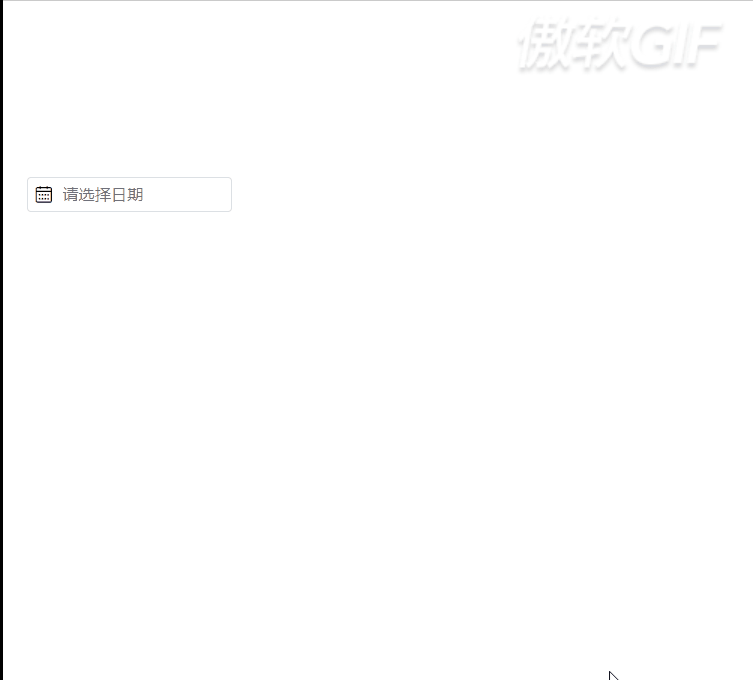

笔者最近在学习Element UI，觉得它提供的日期选择器既简单又美观，于是仿照着写了一个日期插件。笔者使用到的技术有ES5、CSS和HTML，控件兼容IE10+和谷歌浏览器。有一点需要注意，笔者使用到iframe包裹弹出层，由于浏览器的同源安全策略，代码必须得放到tomcat的webapps文件夹下，以相对路径来访问，如http://localhost:8080/datepicker/index.html。代码已经开源到github，地址：https://github.com/tianxing2019/DatePicker，效果图如下。
